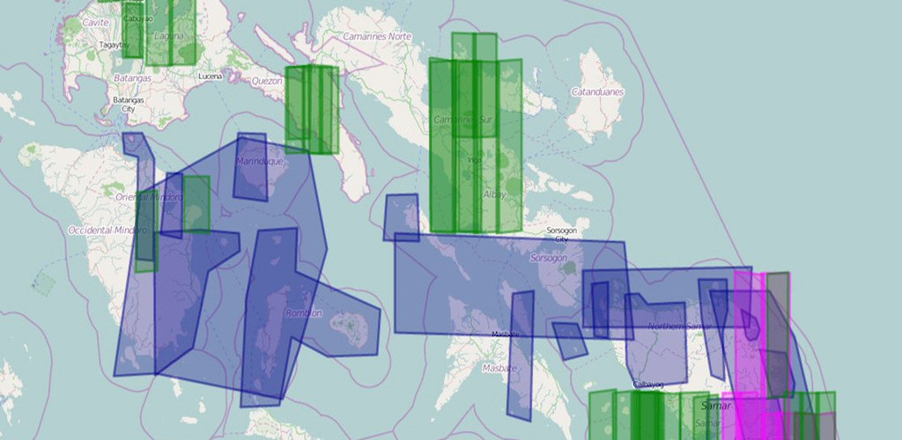
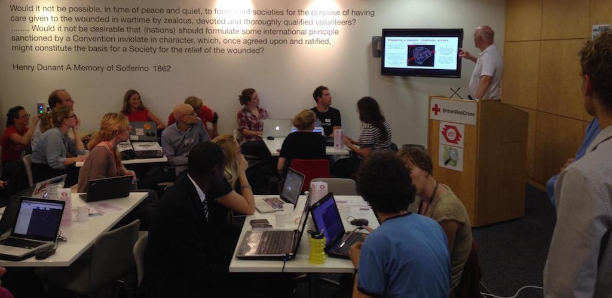
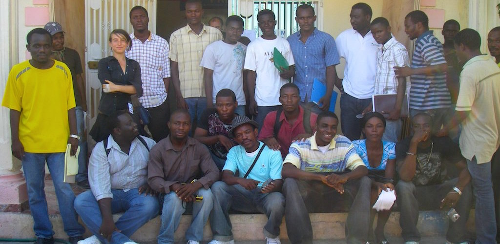

Humanitarian OpenStreetMap Team Summit 2016.
- 

- 
- 

The open mapping for good event of the year.
September 22, 2016 | Brussels, Belgium.
Join us for the second annual Humanitarian OpenStreetMap Team “HOT Summit”!
OpenStreetMap, The Global HOT Community, and Achieving the Sustainable Development Goals
On September 22, community builders, development professionals, educators, geographers, humanitarians, journalists, philanthropists, programmers, and volunteer mappers will come together to learn, discuss and share ideas on how open geospatial data and the global Humanitarian OpenStreetMap Team community are contributing to the Sustainable Development Goals.